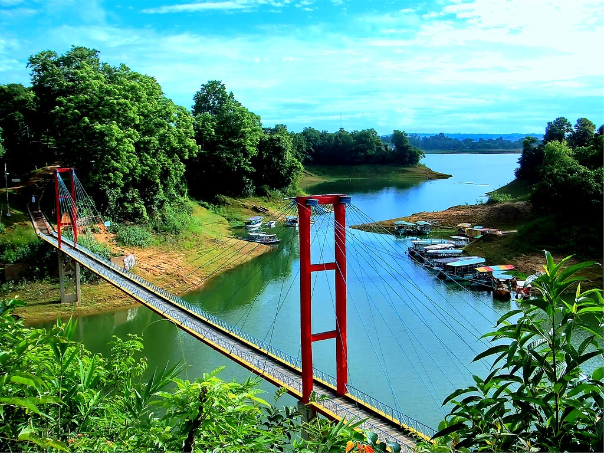
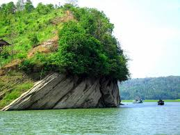

Welcome to Rangamati
Bandarban (Bengali: ‡¶∞‡¶æ‡¶ô‡¶æ‡¶Æ‡¶æ‡¶ü‡¶ø Chakma:ëÑ¢ëÑãëÑüëÑñëÑ®) is a district in south-eastern Bangladesh. It is a part of the Chittagong Division[2] and the town of Rangamati serves as the headquarters of the district. Area-wise, Rangamati is the largest district of the country. Rangamati was a contesting ground for the kings of Tripura and Arakan. This region came under the Mughal Empire after the Muslim invasion in 1566.[3] In 1737 Sher Mosta Khan, a tribal leader, took refuge with the Mughals. After this the Chakma settlement began along with various other settlements of varying ethnicity.[3] From 1760 to 1761, this land was leased to the East India Company.[3]
Spots in Rangamati
-  The total population is 508,182 according to 2005 census of which tribal 52% and non-tribal 48%. The number of males is 287,060 and the females are 238,043 (Census 2001). The density of population is 83 per square kilometre (Census 2001). The number of household is 103,974 having the household size 4.8 (Census 2001). The total population is divided into Bangalees and eleven tribes (ethnic minorities): Chakma, Marma, Tanchangya, Tripura, Pankua, Lushai, Khiang, Murang, Rakhain, Chak, Bowm,Khumi.[4] Location: Located 12 km south of Bazar Town and 6 km from the Kalatali beach by the hill. Area: 1,729 hectares. Getting there: From Kalatali stand, it is only 15-minute ride to entry; if you take a taxi or chandergari (local transport). You can also rent a car from Bazar. Outstanding Features: 1)Beautiful-waterfall . 2)HimchariNationalPark . 3)BrokenHill . 4) Christmas Tree .
-
 Tribal population : (as per census of 2005 ): Chakma-186,395, Marma-44,727, Tanchanga-18,607, Tripura-6,697, Pankho- 2,118, Bowm-1,053, khyang- 791, Lusai- 217, Chak- 177, Rakhain-70, Khumi- 50, Gurkha-03, Etc.-174[4]
As per 1991 census, the religious break up of the population of the district were: Buddhist 53.83%,Muslim 39.28%, Hindu 5.62% and Christian 1.12%. Religious institutions Pagoda 1230, Mosque 1059, Temple 65, Church 16. Genderwise, male constituted 53.59% and female constituted 46.41% of the population.[4]
Tribal population : (as per census of 2005 ): Chakma-186,395, Marma-44,727, Tanchanga-18,607, Tripura-6,697, Pankho- 2,118, Bowm-1,053, khyang- 791, Lusai- 217, Chak- 177, Rakhain-70, Khumi- 50, Gurkha-03, Etc.-174[4]
As per 1991 census, the religious break up of the population of the district were: Buddhist 53.83%,Muslim 39.28%, Hindu 5.62% and Christian 1.12%. Religious institutions Pagoda 1230, Mosque 1059, Temple 65, Church 16. Genderwise, male constituted 53.59% and female constituted 46.41% of the population.[4]
-
 Bandarban is located in the Chittagong Division. It is bordered by the Tripura state of India to the north, Bandarban District to the south, Mizoram State of India and Chin State of Myanmar to the east, and Khagrachari and Chittagong Districts to the west. Rangamati is the only district in Bangladesh with international borders with two countries: India and Myanmar.
The area of the district is 6116 km2 of which 1292 km2 is riverine and 4825 km2 is under forest vegetation
Bandarban is located in the Chittagong Division. It is bordered by the Tripura state of India to the north, Bandarban District to the south, Mizoram State of India and Chin State of Myanmar to the east, and Khagrachari and Chittagong Districts to the west. Rangamati is the only district in Bangladesh with international borders with two countries: India and Myanmar.
The area of the district is 6116 km2 of which 1292 km2 is riverine and 4825 km2 is under forest vegetation
Taji odang
Tajingdong tahjingdong Tajingdong also known as “Bijoy” is the highest mountain of Bangladesh. Tajingdong is about 4300 ft (1310 meters) high from the sea level. It is situated in remakri pangsha union under Ruma upazilla of Bandarban in Bangladesh. According to local tribal language “Tajing” means “Great” & “Dong” means “Hill” so that means “Great hill”. There are various tribal community is developed surrounding the mountain and their living styles are so natural. This remote area is full of natural beauty. Here you can see many small and big mountains and hills. This area is covered with dense forests, birds and animals. There are many tourist visits the Tajingdong Mountain in every year. It is the place of surprising beauty. This natural beauty is surely attracts the mind of the adventurous people. In the winter season many adventurous tourist visit this place with great excitement. You will pleased with the dazzling beauty of green hill, cool fountains, zigzag path, hilly road side, hide and seek game of clouds on the top of the hill. How to go in Tajingdong For visiting Tajingdong you have to reach at Bandarban first then go to Ruma Upazilla. Ruma is 50 kilometer away from Bandarban. You should remember that after 4 pm you are not allowed to leave Ruma for visiting Bogalake, Keokradong or Tajingdong. As it is a remote area of Bangladesh, the road is not so plain. The communication systems of Bogalake become very difficult in the Rainy season. The road is still under construction. From Ruma you can hire a pickup or jeep (locally known as “Chander Gari”) up to Koikhong Jiri at the fare of about Tk. 2000-200. You can also go there by buying tickets of Chander Gari or Bus. The first trip is at 9am. It will take 1-1.30 hrs. Koikhhong Jiri to Ruma you have to go by one hour boat journey. Again Ruma to Boga Lake you should hire a jeep at the fare of about Tk. 1800-2000. Finally you have to walk through the hills from Boga Lake to Tajingdong. tahjingdong Some information to visit Tajingdong Remember that, this journey is very much laborious. So keep confidence. Always carry drinking water and first aid box with you. Show positive attitude with local people and should respect the tribal culture. There are some residential hotels in Ruma Bazar, so you have to confirm at first the hotel reservation before going to Ruma, otherwise you will have no alternative passing the night. If you are fortunate you can get tribal house to pass the night. In Bogalake There is no other accommodation facility except the rest houses of district council. There is no mobile network, no restaurant and also no good road communication. You should start your journey early in the morning from Bogalake to reach Tajingdong and it may take 7 to 8 hours to reach Tajingdong. However, the sceneries of cool air, white clouds, hills, river and lake are really unique and incomparable. If you go there obviously you can get an enjoyable, delightful and thrilling experience.